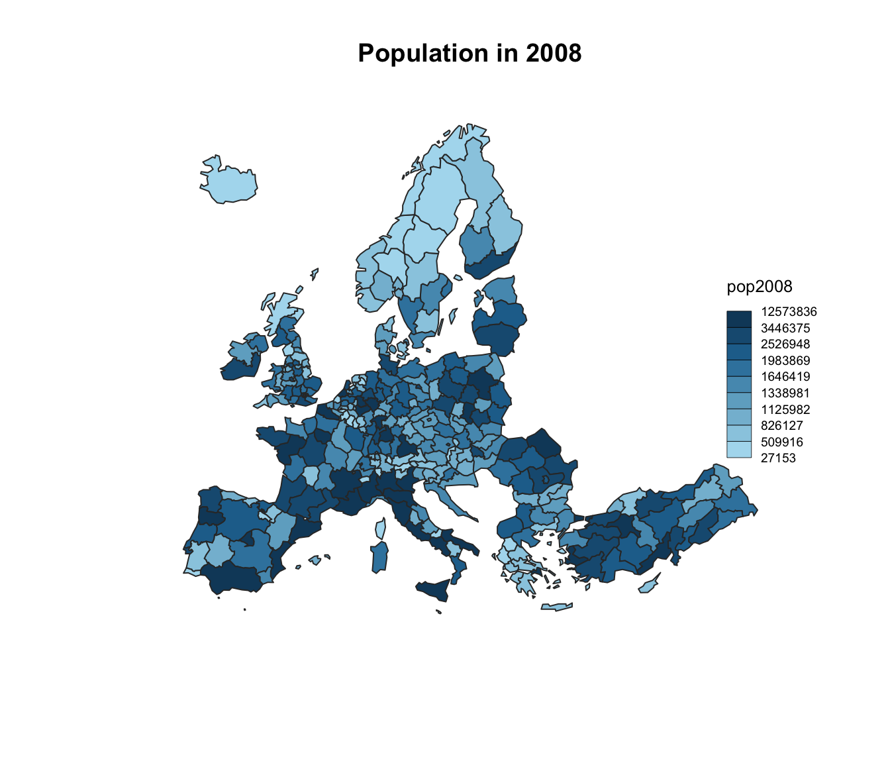
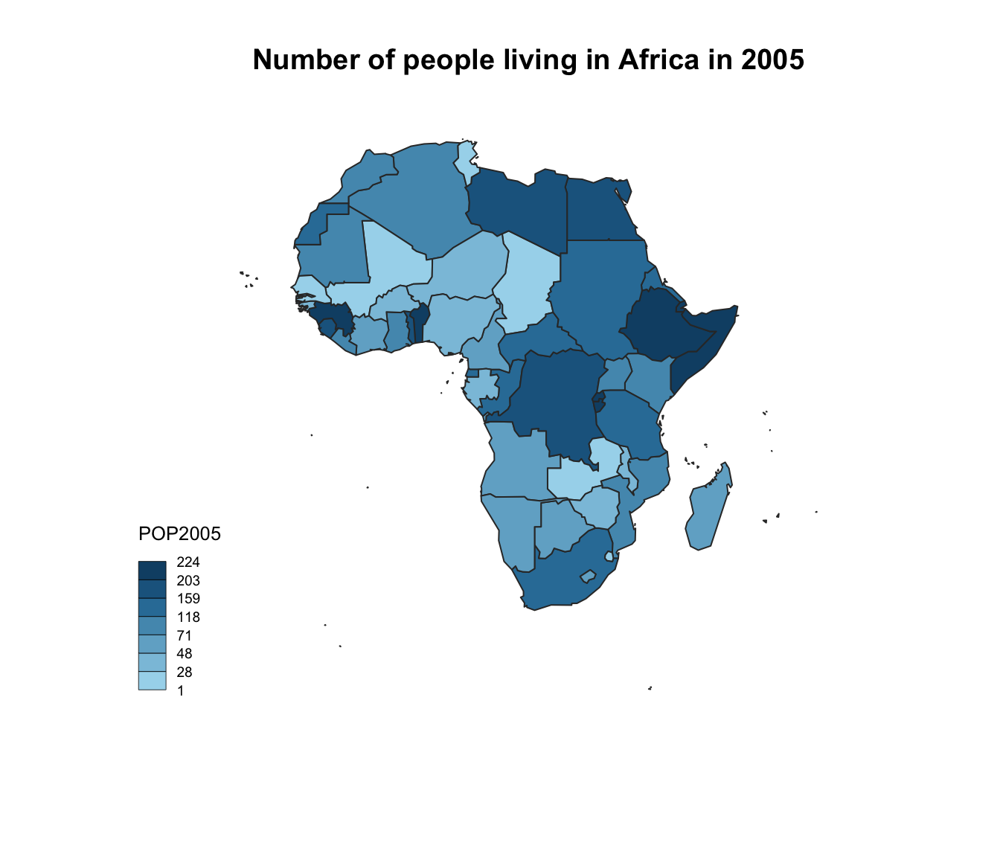

Related chart types

Map

Choropleth

Hexbin map

Cartogram

Connection

Bubble map
The cartography package is a great alternative to make maps with R. This post explains how to build a basic choropleth map using it, with explanation and reproducible code.
The cartography package is a very good alternative to the other tools presented in the gallery for building maps.
It notably allows to:

# Use the cartography library to do the choropleth map
library(cartography)
# Load data
data(nuts2006)
# Build a choropleth
choroLayer(spdf = nuts2.spdf, df = nuts2.df, var = "pop2008" , legend.pos = "right")
title("Population in 2008")The cartography package is a very good alternative to the other tools presented in the gallery for building maps.
It notably allows to:

# Download the shape file from the web and unzip it:
# download.file("http://thematicmapping.org/downloads/TM_WORLD_BORDERS_SIMPL-0.3.zip" , destfile="world_shape_file.zip")
# system("unzip world_shape_file.zip")
# Load it as a geospatial object in R
library(rgdal)
my_spdf <- readOGR( dsn= getwd() , layer="TM_WORLD_BORDERS_SIMPL-0.3", verbose=FALSE)
africa <- my_spdf[my_spdf@data$REGION==2 , ]
africa@data$POP2005 <- as.numeric(africa@data$POP2005)
# Use the cartography library to do the choropleth map
library(cartography)
choroLayer(spdf = africa, df = africa@data, var = "POP2005")
title("Number of people living in Africa in 2005")Related chart types